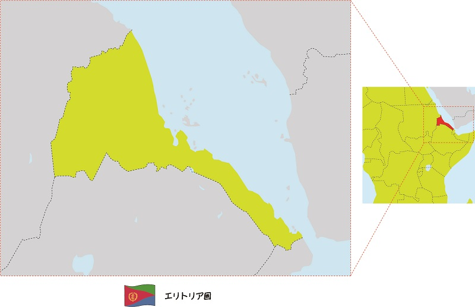
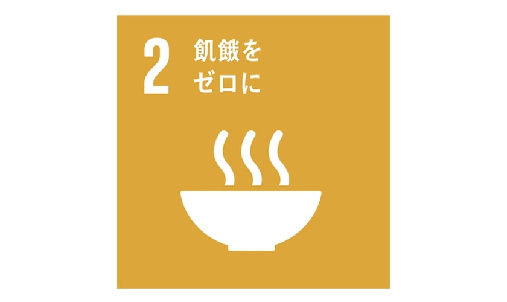
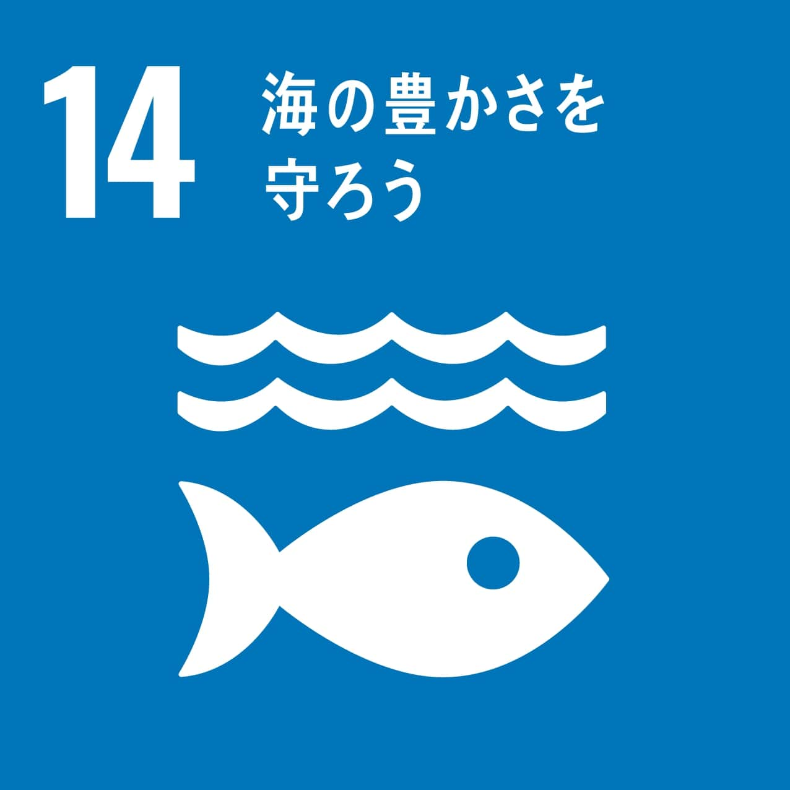
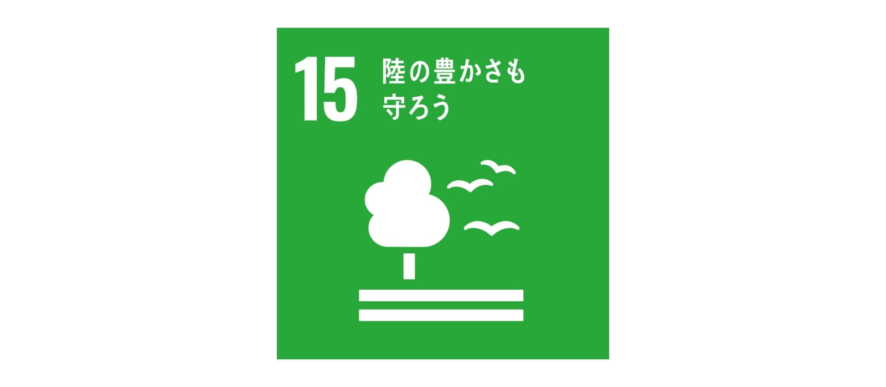

エリトリアってどんな国？
①エリトリアの場所
アフリカ大陸の北東にある、紅海と接している国がエリトリアです。紅海の海岸線は1350㎞あり、紅海には350以上の島もあります。
エリトリアがあるのは、アフリカ北東部で南はジブチ、南西はエチオピア、北西はスーダンに隣接しています。
また日本との時差は6時間あり、人口は約547万人（兵庫県と同じくらい）です（^^♪

②エリトリアの文化いろいろ
通貨：ナクファ（1ナクファあたり8.9円）
公用語：ティグリニャ語、アラビア語、諸民族語
宗教：イスラム教、キリスト教など
また六つの行政区間があります(^^)/
エリトリアのSDG's
①飢餓をゼロに

②海の豊かさを守ろう

③陸の豊かさも守ろう

まとめ
これを機に、エリトリアのことについて知ることができました！発展途上ではありますが環境に対する取り組みがみられる国でした。